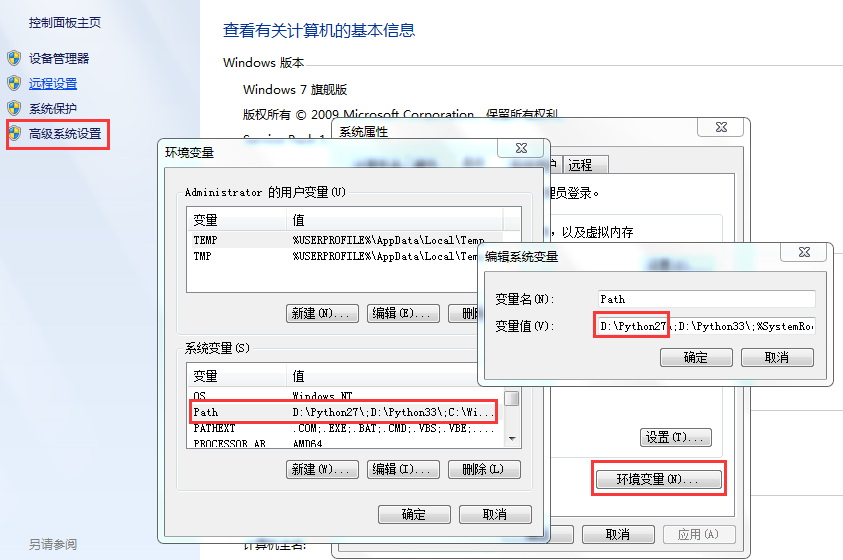
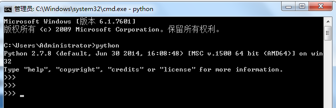

原文连接:https://www.cnblogs.com/xuweiweisir/p/11622668.html
 开发：
开发：
开发语言：
1.高级语言：Python Java、PHP Ｃ# Go ruby C++... ===》 字节码
2.低级语言：C、汇编 ===》 机器码
语言之间的对比：
1.PHP类：适用于写网页，局限性
2.Python Java: 及可以写网页 也可以写后台功能
----- Python执行效率低，开发效率高
----- Java执行效率高， 开发效率低
Python种类：
JPython
IronPython
JavaScriptPython
RubyPython
CPython
...
pypy ==》 这是用CPython开发的Python
安装：
Python安装在OS上，执行操作：写一个文件文件中按照python的规则写，将文件交给Python软件，读取文件中的内容，然后进行转换和执行，最终获取结果。
Python软件 ==> Python解释器（内存管理）
下载：
Python3 在继续更新
Python2 在继续更新
Window：
python2
python3
# 环境变量
配环境变量：根据自己安装位置进行配置。
Linux ：
python2
python3
附：
win10环境变量配置：
方法一：使用cmd命令添加path环境变量
在cmd下输入： path=%path%;D:\Python27 接着按"Enter"回车键。
其中: D:\Python27 是Python的安装目录。
方法二：在环境变量中添加Python目录
(1) 右键点击"计算机"，然后点击"属性"
(2) 然后点击"高级系统设置"
(3) 选择"系统变量"窗口下面的"Path",双击即可！
(4) 然后在"Path"行，添加python安装路径即可(我的D:\Python27)。 ps：记住，路径直接用分号"；"隔开！

(5) 最后设置成功以后，在cmd命令行，输入命令"python"，就可以有相关显示。
